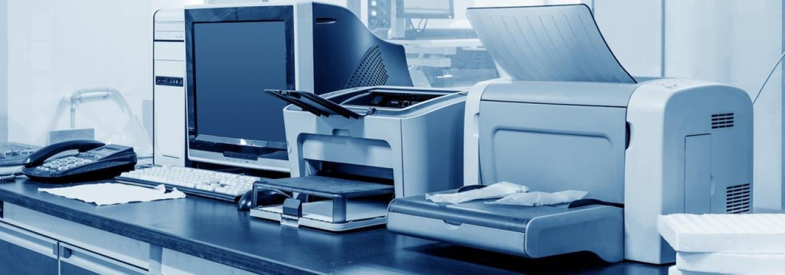

Группы оргтехники: перечень
Компьютеры; ноутбуки; планшеты; калькуляторы; электронные записные книжки; Печатные машинки; принтеры; сканеры; ксероксы; Графические дисплеи; трафареты чертежные приборы;штриховальное оборудование; Читающие автоматы; считыватели штрих кодов;оборудования для уничтожения документов; нумераторы; Телефон; переговорное устройство; приборы поисково-взрывной сигнализации и т. п.
Правила работы c оргтехникой
Личная гигиена. Любая офисная оргтехника нуждается в аккуратной эксплуатации. Работают с оргтехникой чистыми руками.
Чистота. Рабочее место, стационарный или портативный компьютер, мышка, клавиатура и печатающие аппараты должны содержаться в чистоте, поскольку техника восприимчива к скоплению пыли. Нельзя есть вблизи оргтехники, т. к. остатки еды могут попасть внутрь и стать причиной поломки.
Замена расходников. Смена картриджа в лазерном принтере проводится в защитных рукавицах. Внутри картриджа находится тонер, изготовленный из нефтепродуктов, нужно избегать его попадания на одежду, руки и в дыхательные пути.
Электробезопасность. При любой неисправности или повреждении проводов оргтехнику надо обесточить и отдать на ремонт в сервисный центр.